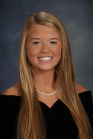

Personal StatementI have spent the past nineteen years embracing the challenge to put a lot on my plate, and I have already begun to make my own mark on campus. As a result of attending a rigorous high school, I fell in love with learning because the atmosphere on campus prioritized academics and supported exploration of interests outside of school. Outside of classes, I got the opportunity to fall in love with the sport of lacrosse. I spent four years on the Varsity team, and learned how to stay calm under pressure, how to not let the losses consume me, and how to eventually lead the team my senior year. School has always been a powerful influence in my life, but it has become more prevalent the past few years, especially after my acceptance to the Honors Program at the University of Georgia. Using my newfound independence of freshman year, I was able manage my time well and ended up being involved in several organizations on campus, while maintaining a 4.0 GPA. I went through the sorority recruitment process and pledged Kappa Alpha Theta because its members pride themselves on being well rounded, geographically diverse, and academically motivated. I am climbing my way up the Panhellenic ladder and was elected by the entire chapter to represent Theta as an official Panhellenic Delegate. They have given me a network of support and connections that have been extremely influential for my first year on campus. For example, I was recently hired for a position at Pauleys for the next three years, which I received through a reference from an older Theta. I was also selected to join Freshman Greek Leaders, which enables me to improve my leadership skills and to learn about opportunities to get involved throughout campus. They brought in speakers who gave me guidance about how to improve my resume, the interview process, including multiple rounds of mock interviews, and how to communicate professionally. My next focus will be to take these skills and transform them into the start of a career that will make an impact on not only myself, but also on those around me. My plan is to enter the business world in a way that interacts with people, deals with the organization of a business, and requires some elements of a budget or numbers. I hope to narrow down exactly what I want to do over the next four years through internships because I am technically still undecided. My parents taught me to set the bar high with everything that I do, so I know that I will dive head first into any career that I choose. My mom is a single, working mom who has instilled in me the importance of being a successful female in a society that still favors men in the working world, so I hope to follow in her footsteps and achieve my own career accomplishments. Social MediaClass ListFall 2016Interpersonal Communication (COMM 1500) #23295 Heather Cohen Principles of Macroeconomics (ECON 2105) #13248 Kris McWhite English Composition II (ENGL 1102) #27498 Stephen Brooks Human Geography (GEOG 1101) #25828 Jennifer Rice Introduction to Physical Geography (GEOG 1111) #25835 Stan Hopkins Spring 2017Principles of Accounting I (ACCT 2101) #40174 Swati Bhandarkar Topics in Computing (CSCI 1100) #23551 Eman Saleh Principles of Microeconomics Honors (ECON 2106H) #23134 David Mustard First Year Odyssey (FYOS 1001) #42514 Manuel Gonzalez Canche Introduction to Honors (HONS 1000H) #42998 Branson Byers American Government Honors (POLS 1105H) #22530 Joshua Putnam |
 |